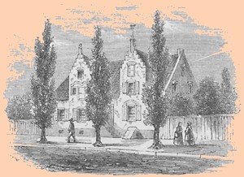

Jacob Vanderheyden
Jacob Vanderheyden was born in April 1737. He was the son of Albany residents David and Geertruy Visscher Vanderheyden. His sister married Dr. Samuel Stringer.
As a young man, he followed other family members into business. In 1766, he was suspected of seeking the commission as Stamp Tax collector. Over the next half century, he became a successful, import merchant. In 1772, he was a lieutenant in the Rensselaerswyck regiment of the Albany County militia.
Although in the prime of his life during the War for Independence, we seek information on his wartime activities. Afterwards, he was accorded a bounty right in conjunction with the Albany regiment of the militia.
He first lived in the third ward. In 1790, he was still living in the heart of the Market Street business district. But by the end of the century, he had settled into a large traditional home on Pearl Street that would become known as Vanderheyden Palace. That location was on the west side of what became North Pearl Street and remained his home for most (if not all) of the rest of his life. In August 1797, the Albany paper reported that fire destroyed the house owned by Gerardus Lansing that was then occupied by "Jacob Vanderheyden, Esq." on Columbia Street.
He was in his thirties when he married a much younger Janet Livingston. By 1789, the marriage had produced four children who were christened in Albany churches. Jacob was a member and pewholder of the Albany Dutch church and also was associated with St. Peter's Episcopal church.
In 1782, Jacob Vanderheyden advertized in the Albany newspaper. Stating that he was a merchant in Pearl Street and was located next to "Schuyler's tavern," he offered blankets, linen, wine and rum, buttons, paper, and rock salt. In trade, he accepted money, country produce, or "Mr. Morris's notes." A subsequent ad offered mill saws, groceries, and dry goods. He served as assessor and as one of the first directors of the Bank of Albany.
Jacob Vanderheyden died in September 1820 and was buried from his residence at 85 North Pearl Street. His widow remained in their landmark house until her passing in 1823.